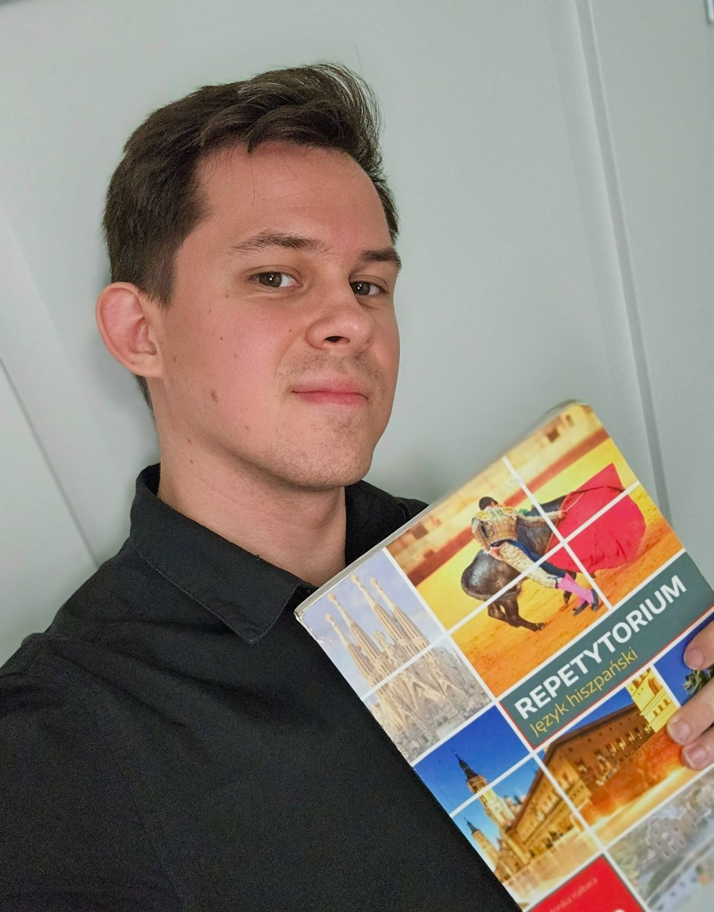

Indywidualna lekcja online
90 zł
60 minut · Zajęcia dostosowane do Ciebie
¡HOLA! ¿EMPEZAMOS?
Indywidualne lekcje dla dzieci, młodzieży i dorosłych — od pierwszych słów po poziom B2+. Ponad 9 lat doświadczenia, praktyczna nauka i materiały dopasowane do Twoich potrzeb.
01 / POZNAJMY SIĘ
¡Hola! Od ponad 9 lat z pasją uczę hiszpańskiego. Mieszkałem w Galicji, dzięki czemu poznałem codzienny język i kulturę Hiszpanii z bliska.

Na zajęciach stawiam na komunikację, indywidualne podejście i praktykę. Łączę naukę z ciekawostkami o historii i kulturze Hiszpanii. Posiadam hiszpański tytuł Bachiller.
Więcej o mnie02 / OFERTA
Od podstaw do poziomu B2+, przez swobodne rozmowy, aż po przygotowanie do matury i egzaminów.
Od pierwszych zwrotów po rozwijanie płynności i pewności językowej.
Przełamywanie bariery językowej i mówienie w codziennych sytuacjach.
Słownictwo, pisanie, rozumienie ze słuchu i praktyczne ćwiczenia.
Przygotowanie do egzaminów i pomoc w bieżącym materiale szkolnym.
03 / CENNIK
90 zł
60 minut · Zajęcia dostosowane do Ciebie
Do uzgodnienia
Preferuję zajęcia online. Stacjonarne spotkania są możliwe po indywidualnym ustaleniu warunków.
04 / DARMOWE MATERIAŁY
Odkrywaj ćwiczenia, gramatykę i słownictwo. Biblioteka będzie sukcesywnie rozbudowywana.
Przeglądaj materiały05 / KONTAKT
Zwolniło się kilka miejsc na indywidualne lekcje! Jeśli chcesz rozpocząć naukę hiszpańskiego, przygotować się do matury lub wreszcie mówić swobodnie, napisz lub zadzwoń. Chętnie pomogę dobrać odpowiednią formę nauki.
Zapytaj o wolny termin¡Nos vemos en clase!